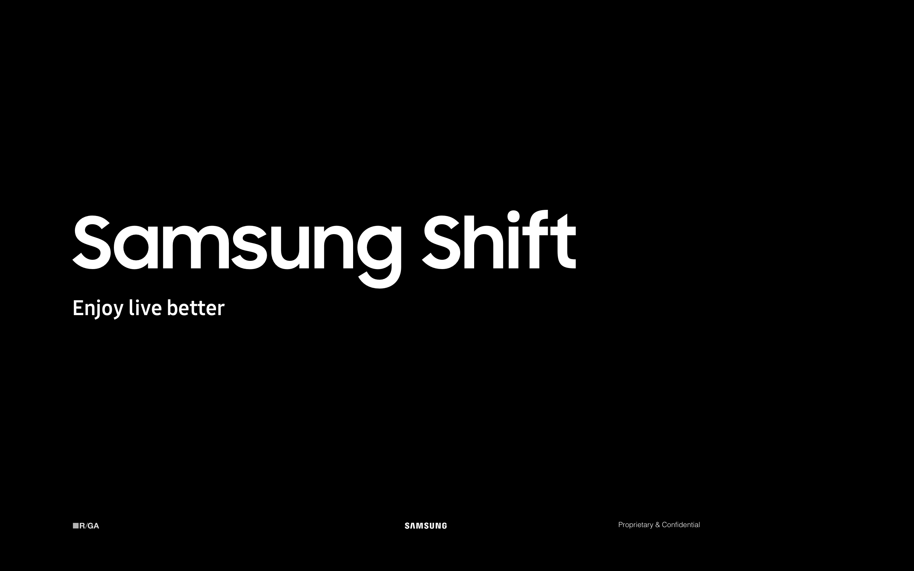
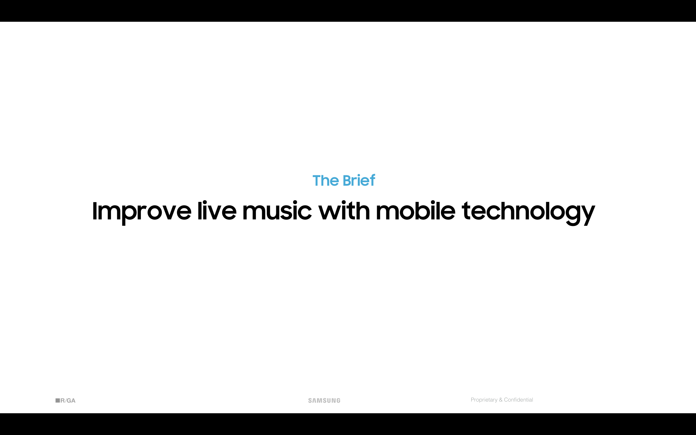
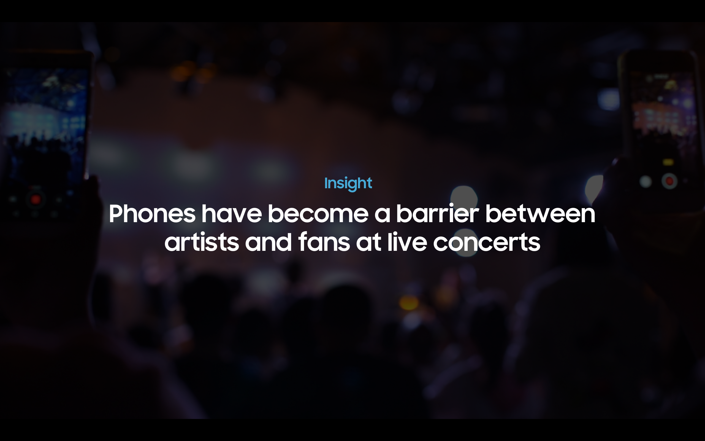
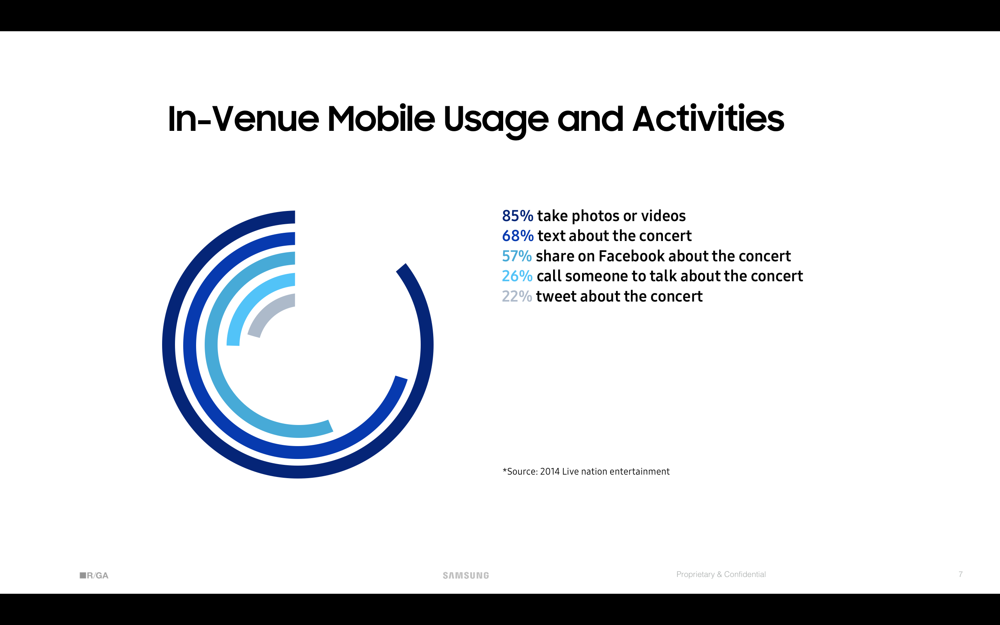
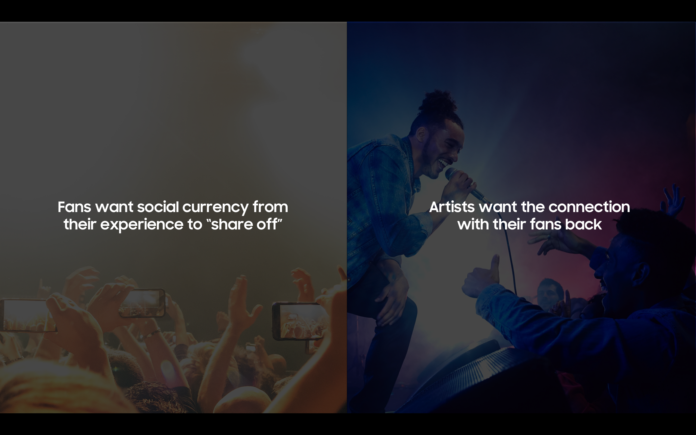
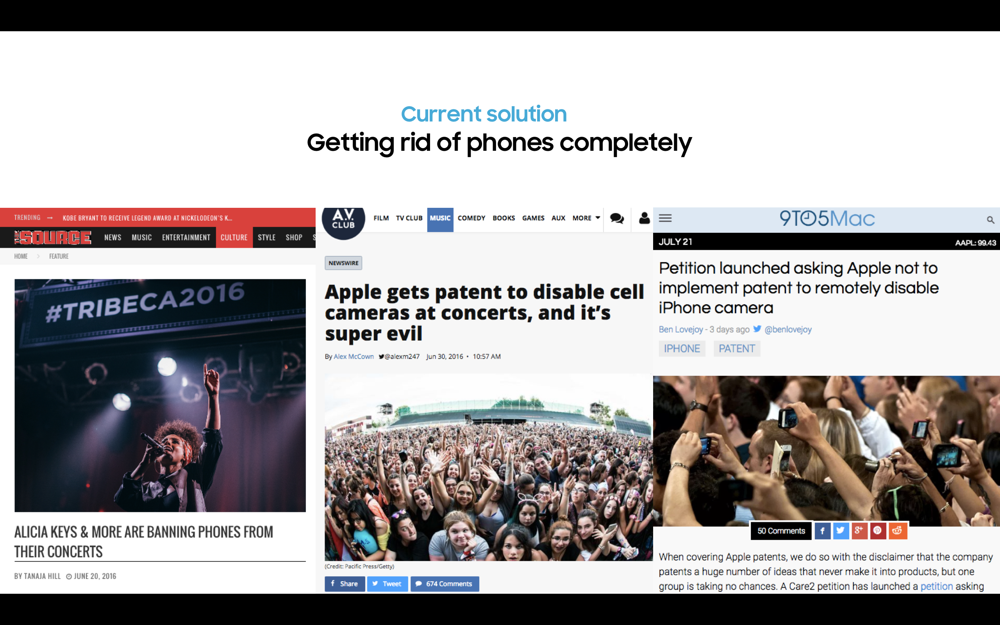
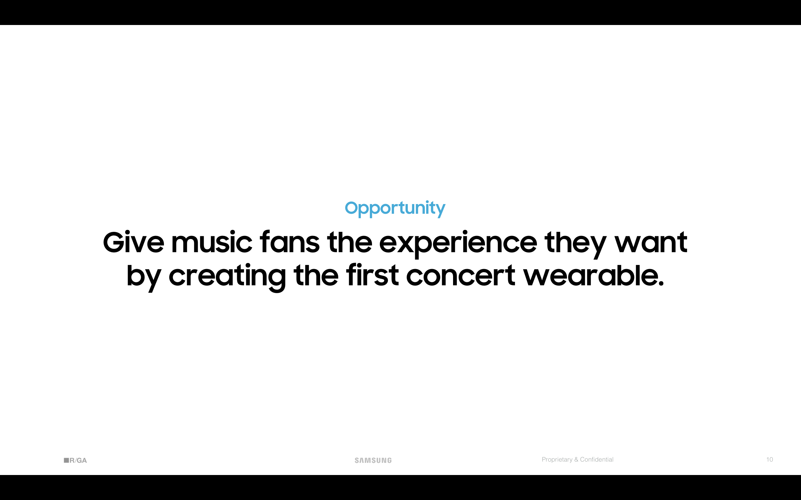

Samsung Shift
08/2017 _ New York
Engaged in the intern project that lasted thorughout the whole intership at R/GA,
our team of 5 developed and pitched the idea directly to the clients at the end of the final week.







and here is how:
the full presentation is available among request.
_tools:
framer, adobe suites